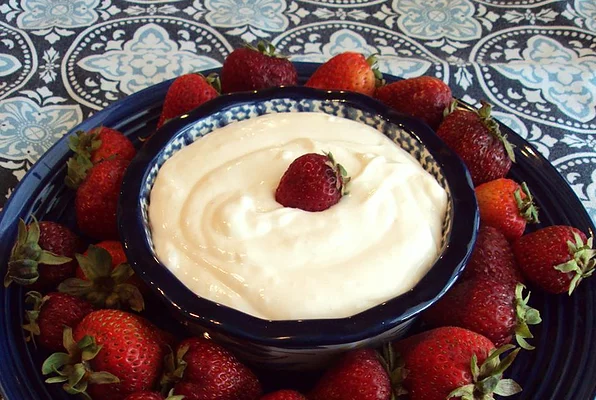

Easy Fruit Dip

Description:
Tasty dip to compliment your fruit.
This dip is quick and easy and is a great accompaniment to any type of fruit tray from melon to strawberry to apples or grape.
Ingredients:
- 1 (12 ounce) package whipped cream cheese
- 1 (7 ounce) jar mashmallow creme
- 4 ounces sour cream
- 1 teaspoon vanilla extract
Steps:
- Beat cream cheese, marshmallow creme, sour cream, and vanilla extract together in a bowl using an electric mixer.
- Refrigerate until chilled, at least 30 minutes